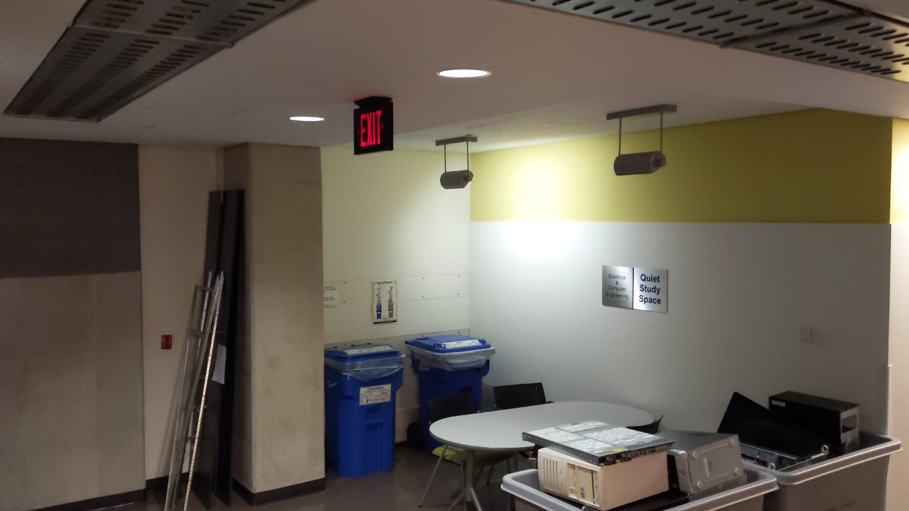
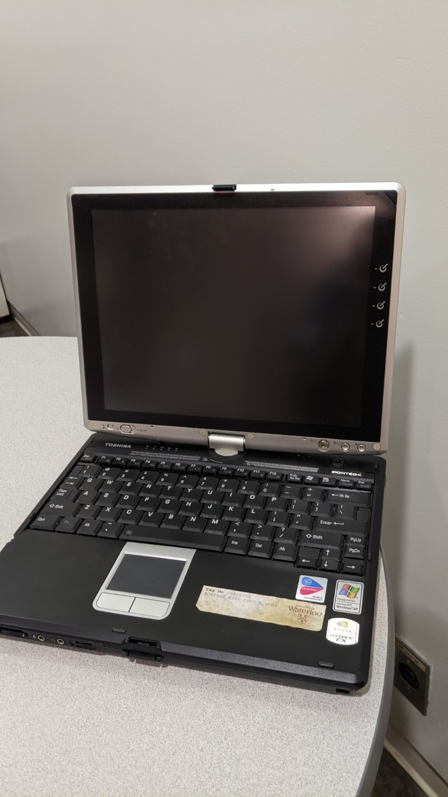
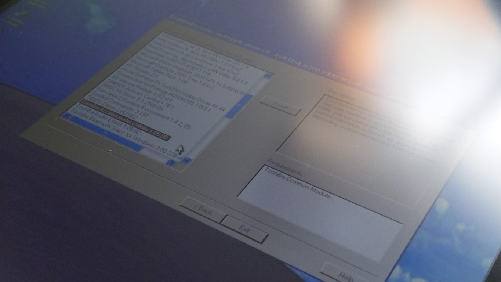
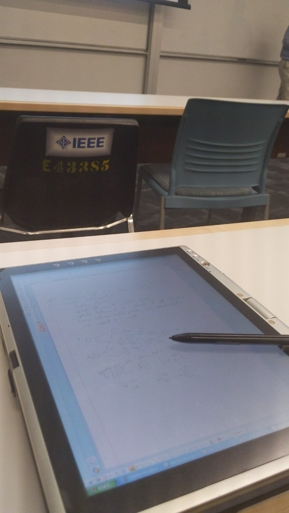

If you asked me what my favourite corner was, I would wonder where you came up with such a strange question and possibly describe my inability to bring to mind every single corner I've ever visited on the spot. If you pestered me a little more, I might start telling you about this one.
It's in a campus building that seems to have been built to house everything they couldn't fit anywhere else: a natural history museum, a café, a scale model of a tunnel-boring machine, offices for a bunch of the ECE faculty and grad students, a rooftop patio, and the university's IT offices. Somewhere in the middle of all this is this bit of extra space that clearly nobody knew what to do with, so they put up a table and a couple chairs and designated it as a Quiet Study Space for ECE students.
Its utility as an actual Quiet Study Space is often questionable: the IT people in the offices next door seem to really like leaving their office doors open and having loud phone conversations. After 5:00, though, when the IT people go home, it gets dead silent — but more importantly, you can go through the two large bins of assorted discarded electronics outside their offices. Actually, you can go through them before the IT people go home, they don't really seem to mind as long as you don't make a mess.
These bins are sort of a dream come true for me. Free electronic junk? In varying states of working condition and age? I'm pretty sure I have literally dreamed about something like this. I've even tried to find unlocked dumpsters behind electronic recycling centres to look through, to no avail. Anyway, these bins are nevertheless usually filled with old servers and desktop towers that are simultaneously sort of boring and hard to sort through since they're so heavy, but sometimes there are real treasures.
Three things stood out to me about this machine: the screen that flips around just like today's Surfaces and 2-in-1 laptops, the "designed for Microsoft Windows XP" sticker, and the pen, which was still intact and nestled safely inside its holder at the side of the device. I suddenly felt like I absolutely had to show up to class with this thing, boot up Windows XP, and begin taking notes on it. I don't feel like an explanation for this is necessary.
So I took it home, of course. It was missing memory, a hard drive, and a power adapter, so I wasn't sure if it even worked. If not, at least it would look cool.
I have way too much going on most of the time to screw around with old computers, but eventually I got around to buying some DDR-333 memory and a microSD to IDE adapter. The power adapter was a bit tricky: the 15V barrel plug is a bit unconventional, but I was able to find this one which worked fine.
After installing all the parts, the machine powered up! Excited, I went to a physical store to buy a microSD card that was actually big enough to install Windows XP onto, which is something I had realized I didn't have. The employee at the Canada Computers seemed surprised that I picked a somewhat higher-end card for such an old machine, but like, (a) idk I just really want the Optimal Windows XP Experience ok, and (b) why do the cheap 64GB cards cost $6 now?? what the hell happened??? something's fishy about this
Now for the easy part: install an operating system.
Turns out, this was the hard part. The Toshiba Portege M200 does not have a CD drive, which seemed to be the only way people installed operating systems in this era. USB boot either hadn't been invented yet or just wasn't common enough for this laptop to have it. After looking around various blog posts and forum posts, there seemed to be three ways people installed operating systems on this laptop:
- Happening to have a USB CD drive that would work (not all of them would)
- Using an SD card (specifically with a maximum of 1GB) to load some firmware that would enable USB boot, which would apparently end up being extremely slow
- Using another computer as something called a PXE server, connecting it to the laptop with an Ethernet cable, and booting Windows PE (?) over the Ethernet connection (??), then mounting the Windows XP installer ISO over the same network connection and running it from there
- From your computer that you want to use as a PXE server (mine is running Windows 10), go to Control Panel -> Programs and Features -> Turn Windows features on or off and enable SMB 1.0/CIFS File Sharing Support (this is how the Windows XP installer will get shared)
-
Follow this guide from a blog post from 2008 (but use the latest version of Tftpd64 from https://pjo2.github.io/tftpd64/ instead of the old one from the zip file. Just make sure to check "Bind DHCP to this address", I think that's the only thing I had to change from the original instructions)
- Also, the WinZip self-extractor that the blog post tells you to download seems to be some sort of strange relic from some version of the past where people were okay with just running random .exe files from the internet instead of extracting zip files themselves. In case you're less comfortable with this, I've reuploaded the files to my own website but as a normal zip file here.
- Follow this follow-up guide to that guide, and also follow the directions in AA's comment
And with that, Windows XP was installed! Unfortunately, even though the listing on archive.org that I downloaded from said that I was downloading Windows XP Tablet PC Edition, it did not turn out to actually be Tablet PC Edition, which apparently comes with a few cool tablet-specific apps like Windows Journal and a game that you have to use a pen to play. I'll figure out how to install those later I guess.
I was now able to play Minesweeper, but the pen and the rest of the tablet features didn't seem to work. I found this recovery DVD on archive.org, but it just came with a program featuring a long list of drivers, each of which you had to select, click the "Install" button of, and then click through the installer wizard.
I initially just tried to guess which ones would contain the important drivers (particularly for the pen), but as it turns out, there were a lot of important drivers (and none of the ones I initially installed made the pen work). Having more important things to do, I put the laptop aside and spent the next few weeks opening it up every once in a while to install a couple of drivers, then closing it back up.
Eventually, most of the machine worked — the tablet mode, the auto-rotation in tablet mode, the joystick on the front of the screen — but the pen still didn't do anything. Turns out, the pen drivers aren't bundled with the rest of the drivers and you have to download them from Wacom's website and install them separately. The latest release that supported Windows XP wouldn't work for some reason, so I picked a random release from 2008 instead and installed that and it worked great. Finally, I could write with a pen on my Windows XP tablet.
By the time I had accomplished this, there was only one day of classes left in the term. But that's all I needed. I left my usual note-taking tablet at home, left the charger for the Toshiba at home as well because its battery lasts impressively long given how old it is, sat at the front of my last class of the term, pulled out the Toshiba, opened up OneNote 2007, and flipped the laptop into tablet mode. The note-taking experience was just as satisfying as I hoped it would be.
